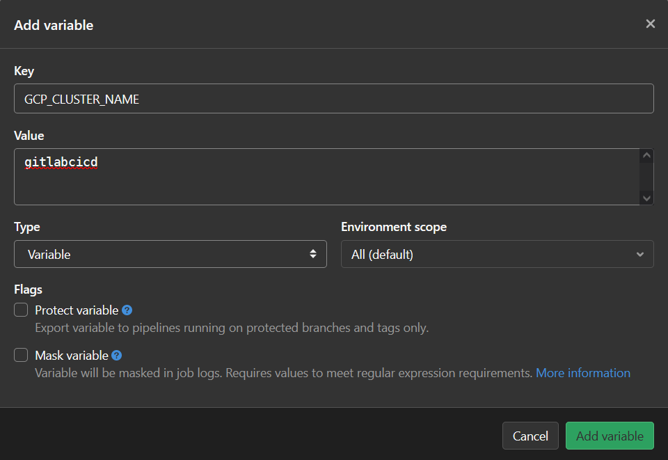

Gitlab CICD¶
Intro¶
What does it do?¶
Whenever you push code to your gitlab repo, gitlab's CI/CD pipeline would be triggered. In the first step, it will build a docker image and push the docker image to your Google Container Registry (GCR). In the second step, it will push the image to your Google Kubernetes Engine (GKE).
Guides followed¶
- main
- https://blog.cloud-ace.tw/application-modernization/devops/devops-gitlab-asp-net-core-kubernetes-engine-ci-cd/
- build & push docker image to google container registry
- push image to google kubernetes engine
- contain some mistakes
- his repo
- https://blog.cloud-ace.tw/application-modernization/devops/devops-gitlab-asp-net-core-kubernetes-engine-ci-cd/
- supplementary
- https://medium.com/@tasslin/-gcp-5-gitlab-ci-gke-7c7b1c4e9eec
- build & push docker image to google container registry
- push image to google kubernetes engine
- https://ludusrusso.space/blog/2020/09/gitlab-ci-gcr
- build image and push to google container registry
- https://ithelp.ithome.com.tw/articles/10266722?sc=iThomeR
- build & push docker image to Gitlab container registry
- https://ikala.cloud/tutorials-kubernetes-engine-load-balancer/
- https://cloud.google.com/architecture/implementing-deployment-and-testing-strategies-on-gke#perform_a_rolling_update_deployment
- https://medium.com/@tasslin/-gcp-5-gitlab-ci-gke-7c7b1c4e9eec
- troubleshooting
- Cannot connect to the Docker daemon at . Is the docker daemon running?
- dial tcp: lookup docker on : no such host
Create GCP VM and install Gitlab¶
(Not really necessary, you can just use your own machine and https://gitlab.com/. If you're using your local machine, just do all the steps involving GCP VM on your local machine instead.)
Create a computing engine instance - boot disk size >= 30GB - better give more memory (like 64GB) to or would be pretty laggy - you can alter these settings after you created too (need to shutdown first tho)
Reserve the ephemeral external IP to make it static - go to https://console.cloud.google.com/networking/addresses/ - click "Reserve"
Internet Site Okinstall Gitlab
official doc: https://about.gitlab.com/install/#ubuntu
curl https://packages.gitlab.com/install/repositories/gitlab/gitlab-ee/script.deb.sh | sudo bash
sudo EXTERNAL_URL="http://EXTERNAL_IP" apt-get install gitlab-ee
if Unable to locate package gitlab-ce, do
curl -L -o gitlab-ee_13.0.6.deb https://packages.gitlab.com/gitlab/gitlab-ee/packages/debian/buster/gitlab-ee_13.0.6-ee.0_amd64.deb/download.deb
sudo EXTERNAL_URL="http://EXTERNAL_IP" apt install ./gitlab-ee_13.0.6.deb
then go to http://external_ip
you should see
- To login as admin, use the username
rootand the password in/etc/gitlab/initial_root_password - To use a new account, first register and then login.
- If you see you account is pending approval, login as admin and go menu admin settings sign-up restrictions and uncheck
Require admin approval for new sign-upand save changes.
(gitlab is intalled in /var/opt/gitlab)
(in gcp) Search service accounts and create a new service account.
Assign the Storage Admin & Kubernetes Enginer Developer role to it and hit done.
Create gitlab repo¶
Login to gitlab (not with admin)
Go to edit profile(in avatar dropdown) user settings SSH Keys and add your ssh public key in your local computer, may be in ~/.ssh).
Create a new project.
(in local) Clone the repo and try push something.
Set gitlab CI/CD environmental variables¶
(in repo) Settings CI/CD Variables
(in GCP) go to the service account you've created, and go to manage keys add key create new key json download it (used in next step)
(back to Gitlab)
Add GCP_SERVICE_KEY, the value is the key json file you've just downloaded. Uncheck Protect variable also.
Add GCP_PROJECT, the value is your GCP project ID.

Add GCP_ZONE, the value is the zone your VM's in (I think)
go to GCP shell and create a GKE cluster
gcloud container clusters create [cluster_name] --num-nodes=2 --machine-type=n1-standard-1 --zone=us-east1-b
It would take a few minutes, but you can just leave it and carry on.
Back to Gitlab and add GCP_CLUSTER_NAME, the value is the name of the cluster you've just created.

Add GCP_GCR, the value is gcr.io/[GCP_project_ID]/[Gitlab_repo_name]
(if the region you use isn't US, you probably should use asia.gcr.io eu.gcr.io etc. instead)
GCR means Google Container Registry, set this up so that later on your docker images would be pushed to GCR also.
Now you have 5 variables set.

Install docker on GCP VM¶
Go to GCP VM terminal and install docker.
official doc: https://docs.docker.com/engine/install/ubuntu/#install-using-the-repository
update apt and install necessary packages
add Dockers official GPG key
curl -fsSL https://download.docker.com/linux/ubuntu/gpg | sudo gpg --dearmor -o /usr/share/keyrings/docker-archive-keyring.gpg
set up the stable repository
echo \
"deb [arch=$(dpkg --print-architecture) signed-by=/usr/share/keyrings/docker-archive-keyring.gpg] https://download.docker.com/linux/ubuntu \
$(lsb_release -cs) stable" | sudo tee /etc/apt/sources.list.d/docker.list > /dev/null
install docker engine
test if is installed correctly
hello-world and pring some messagessudo docker ps -a to check if it's running
Add necessary files in gitlab repo¶
Go to your gitlab repo and add .gitlab-ci.yml
Whenever you push code, Gitlab runner would run your CI/CD pipeline according to this file.
variables:
DOCKER_DRIVER: overlay2
DOCKER_HOST: tcp://docker:2375
DOCKER_TLS_CERTDIR: ""
GCP_SERVICE_KEY: $GCP_SERVICE_KEY
GCP_PROJECT: $GCP_PROJECT
GCP_ZONE: $GCP_ZONE
GCP_CLUSTER_NAME: $GCP_CLUSTER_NAME
GCP_GCR: $GCP_GCR
stages:
- docker-build
- gke-deploy
- test
docker-build:
stage: docker-build
image: docker:latest
tags:
- gke
services:
- name: docker:dind
before_script:
- echo $GCP_SERVICE_KEY | docker login -u _json_key --password-stdin https://gcr.io
script:
- docker build -t $GCP_GCR:latest .
- docker tag $GCP_GCR:latest $GCP_GCR:$CI_COMMIT_SHA
# push to google container registry
- docker push $GCP_GCR:latest && docker push $GCP_GCR:$CI_COMMIT_SHA
gke-deploy:
stage: gke-deploy
image: google/cloud-sdk
tags:
- gke
before_script:
- echo $GCP_SERVICE_KEY > ~/service_account_key.json
- gcloud auth activate-service-account --key-file ~/service_account_key.json
- gcloud config set project $GCP_PROJECT
# point kubectl at a specific GKE cluster
- gcloud container clusters get-credentials $GCP_CLUSTER_NAME --zone $GCP_ZONE --project $GCP_PROJECT
# apply the configuration in deployment.yaml
- kubectl apply -f deployment.yaml
script:
# rolling update on image
- kubectl set image deployment/app-deployment app=$GCP_GCR:$CI_COMMIT_SHA
- kubectl rollout status deployment/app-deployment
As defined in stages, it will first execute docker-build, then (if successful) gke-deploy.
Go to your gitlab repo and add deployment.yaml
---
# Source: service.yaml
apiVersion: v1
kind: Service
metadata:
name: app-service
spec:
selector:
app: app-service
type: LoadBalancer
ports:
- protocol: TCP
name: app-80-80
port: 80
targetPort: 80
---
# Source: deployment.yaml
apiVersion: apps/v1
kind: Deployment
metadata:
name: app-deployment
spec:
replicas: 4
strategy:
type: RollingUpdate
rollingUpdate:
maxSurge: 1
maxUnavailable: 1
revisionHistoryLimit: 5
selector:
matchLabels:
app: app-service
template:
metadata:
labels:
app: app-service
spec:
containers:
- image: asia.gcr.io/<gcp_project_id>/<image_name>:latest
name: app
ports:
- containerPort: 80
name: app-port
resources:
requests:
cpu: 50m
memory: 50Mi
learn more about deployment.yaml here
Pull sample codes from https://github.com/dotnet/dotnet-docker/tree/main/samples/aspnetapp and delete everything except aspnetapp & Dockerfile & aspnetapp.sln.
(you can partial clone like this)
Install & register Gitlab Runner on GCP VM¶
official doc: https://docs.gitlab.com/runner/install/linux-repository.html
(go to your GCP VM)
add official repo
curl -L "https://packages.gitlab.com/install/repositories/runner/gitlab-runner/script.deb.sh" | sudo bash
install gitlab runner
register gitlab runner
sudo gitlab-runner register \
--non-interactive \
--url "[VM's external IP]" \
--registration-token "[token]" \
--executor "docker" \
--docker-image docker:stable \
--description "[whatever]" \
--tag-list "gke" \
-docker-privileged="true"
- registration token can be found in (your gitlab repo)
SettingsCI/CDRunnersSpecific runners - executor =
docker - default docker image =
docker:19.03.12 - tag-list: the tag you use should be the same as what you wrote in
.gitlab-ci.yml, as the runner would only run the jobs with the matching tag- alternatively, you can go to
SettingsCI/CDRunnersedit your runner and uncheckIndicates whether this runner can pick jobs without tagsso that the runner would run all jobs regardless of if the tag matches - or just add
--run-untagged="true"when registering runner
- alternatively, you can go to
Alternatively, you can run
Go to Settings CI/CD Runnersto find your runner.
Configure gitlab runner
(in GCP VM)
change original values to this
(if you've set up your gitlab runner properly it's probably already like this)
for more troubleshooting:
https://gitlab.com/gitlab-org/gitlab-runner/-/issues/4566#note_199261985
Push and trigger CI/CD¶
push codes
In your repo, go to CI/CD Jobs to see what happened.
Go to GCR, a repo containing your docker images should appear.
If succeed, go to GKE/workload to see if your image is up.
Go to GKE/Services & Ingress and click the endpoint, you should see this
you can also get the endpoint by
You can open Google cloud shell and
kubectl rollout status deployment/app-deployment
kubectl get deployment
kubectl get pods
kubectl get svc/app-service
Check the official guide for more
https://cloud.google.com/kubernetes-engine/docs/how-to/updating-apps#kubectl-set
Troubleshooting¶
Gitlab CI/CD job pending forever¶
Your runner can't be picked up. Go to where your gitlab runner is installed and
Is the docker daemon running?¶
Docker isn't running on where your gitlab runner is at. Start your docker
if still persist follow https://gitlab.com/gitlab-org/gitlab-runner/-/issues/4566#note_199261985 again
dial tcp: lookup docker on : no such host¶
makeprivileged = true
More¶
This part isn't included in the main guide I followed.
PHP test¶
official guide: https://docs.gitlab.com/ee/ci/examples/php.html
create a new stage in .gitlab-ci.yml
stages
In test.php, write your tests.
- exit(0) will indicate the test has succeeded
- exit(1) will indicate the test has failed
- https://stackoverflow.com/a/54025268/15493213
Continue after failure¶
https://docs.gitlab.com/ee/ci/yaml/#allow_failure
job1:
stage: test
script:
- execute_script_1
job2:
stage: test
script:
- execute_script_2
allow_failure: true
job3:
stage: deploy
script:
- deploy_to_staging
Conditions to run jobs¶
rules¶
https://docs.gitlab.com/ee/ci/yaml/index.html#rules
job1:
stage: test
rules:
- if: '$CI_COMMIT_TITLE =~ /cicd/'
script:
- execute_script_1
job2:
stage: test
script:
- execute_script_2
.gitlab-ci.yml, if the commit message contains cicd, both jobs would be run, otherwise only job2 would be run.
when¶
https://docs.gitlab.com/ee/ci/yaml/index.html#when
run when at least one job has failed in previous stages``
run whenever, regardless of any previous failures never run automatically, have to be run manuallyPredefined variables¶
https://docs.gitlab.com/ee/ci/variables/predefined_variables.html
Variables defined by Gitlab. You can just use them directly without first setting them up.
e.g.
- CI_COMMIT_TITLE = first line of your commit message
- CI_COMMIT_BRANCH = committing branch name
Job dependencies (Needs)¶
https://docs.gitlab.com/ee/ci/yaml/index.html#needs
Notified when Job failed¶
profile (right top avatar) edit profile Notifications right bottom drop down custom
https://about.gitlab.com/blog/2020/06/17/notification-on-pipeline-succeeds/